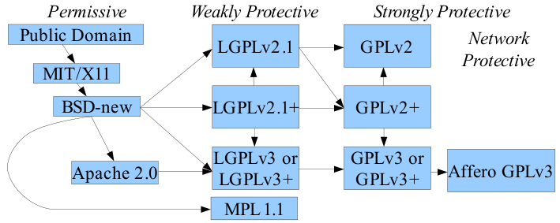

也紀念我們永遠的朋友 李士傑先生（Shih-Chieh Ilya Li）。
Open Source Software license
 We provide Open Source Software license and legal materials via this page.
We provide Open Source Software license and legal materials via this page.
從 Copyleft 看自由開源軟體授權相容性
◎ 泛談授權相容性的基本概念
所謂「授權相容性 (license compatibility)」是指，針對以不同的授權條款所釋出的程式碼，在連結 (link)、取用或合併 (merge) 的利用方式下，能合法為之而不致違反任一條款的權利義務關係規定；初階的授權相容性，談的是自由開源軟體授權條款在義務性規定 (obligation) 上彼此是否相容，而進階的授權相容性，則是指集合式的軟體專案裡，授權元件基於其授權方式的互動關係是否相容。本文因為篇幅所限，所以行文上將併以條款相容與應用相容的角度，來討論自由開源軟體授權元件的相容關係。著眼點在於，自由開源軟體授權條款具有不必個別磋商之特性，使用者只要了解並遵守該條款內容即可自由利用，但因各個自由開源軟體條款種類繁多（註一），權利義務內涵各異，導致在多款自由開源軟體之間或是專屬軟體 (proprietary software) 與自由開源軟體間的連結、取用或合併之後續利用，皆可能產生授權狀態不相容的情形。授權相容性又以 Copyleft 的相容與相斥為核心；因此，本文將先略談 Copyleft 機制，進而針對各種條款相容性的態樣說明其內涵。
◎ Copyleft 的定義與授權拘束性的關係
Copyleft 的機制要求使用者重製原作或於嗣後產出衍生著作並再行散布時，亦須採用相同的方式進行授權（註二），並且這樣的要求也不會隨著作品的改作與再散布而受到影響，否則即逾越原授權範圍而造成侵權之結果。而具有強烈外擴性的 Copyleft 又被稱為授權拘束性 (License Inheritance)，也就是說該程式的授權方式不但不會因程式碼的向後散布而受到更改，有時拘束特性更會進一步擴散到後手對原程式修改、添附的衍生部份，以維護相同之授權方式得於衍生著作中存續。並非所有自由開源軟體條款皆具有授權拘束性，不同條款具有授權拘束性之權利義務內涵也不盡相同。倘若兩種條款皆有授權拘束性，其中權利義務內涵卻有牴觸，則將造成授權不相容。
GPL 為授權拘束性條款的典型。它要求 GPL 程式碼的衍生著作在散布時，包括其衍生程式之整體皆須以 GPL 來散布；亦即，其授權拘束性的適用範圍涵蓋整個程式，衍生著作中全部之程式碼以 GPL 向後授權。此外，有部分同樣具有授權拘束性之開源條款之適用範疇較 GPL 為窄，下文以 LGPL、MPL、CDDL 及 EPL 為例。
LGPL 專以「函式庫或具有函式庫性質的程式」作為授權標的。若單純的呼叫、以動態連結的方式使用該函式庫時，其他程式並不會被視為其衍生作品而受到 LGPL 的授權拘束；亦即，其係以函式庫作為其授權拘束性的範圍，因此，修改該函式庫後的衍生著作或將該函式庫作為靜態連結的主程式仍應以 LGPL 釋出。
MPL 及 CDDL 是以「檔案」為其授權拘束性的範圍，若使用者取用該程式時有對其中之檔案進行修改，或將它與其他檔案合併成新檔案，此時即需依 MPL 將修改後的檔案釋出。反之，倘未對該檔案進行修改或與其他檔案合併時，例如單純外加一個修補程式／補丁檔 (patch) 進入原程式以增進或修補其功能，此時即無須依 MPL 來授權該補丁檔。
EPL 及 CPL 是以「模組」作為其授權拘束性的範圍；與前段邏輯相同，若使用者之修改或合併行為已涉入該模組的範疇，即對模組內程式碼有所變更，則須依 EPL 或 CPL 繼續授權，若在模組之外，則可任意以其他方式授權。
上述各條款皆有一定程度之授權拘束性，惟亦有許多開源條款並不具有授權拘束性， 例如 MIT、BSD 及 Apache 等條款即屬之。這些條款雖然也有少量的授權義務規定（註三），但其並未要求使用者就其開發出的衍生著作採用原來的授權，因此，再行釋出衍生著作時即可另採其他任何授權條款，包含具有授權拘束性的開源條款或是專屬軟體授權在內。
以上簡略說明各類條款的授權拘束性，接下來將介紹條款相容性。
◎ 自由開源軟體條款相容性之態樣
本文將條款相容性的態樣分為四類：（一）水火不容；（二）蛇吞象；（三）獅虎合；以及（四）牛鷺居。以下將針對此四類相容態樣各別介紹及舉例說明：
【水火不容】：條款之間的全然互斥
水火不容係指，不同的授權條款之間不能直接相容，就像水火之間本性相斥、不能共存一般。以下筆者將以數學邏輯符號來表示條款間之關係，因為授權條款中的權利義務關係是以許多要素所構成，因此以集合的方式呈現說明，可能較容易理解。
假設現在有集合 A 與集合 B，其中 A = {a, b, c, d}，B = {a, b, e, f}，可以了解到 A、B 兩個集合間有一部分交集，但並不存在「包含／包含於」的關係。若將 A、B 視為兩個授權條款，亦即 A 條款與 B 條款除了一部分的條件相同之外，尚有一部分條件是 A 所有的元素但 B 卻所無，並且反之亦然。在這種情況下，如果將 A、B 兩個專案的程式碼合併為一個程式，在嗣後釋出時就可能面臨到擇一違反授權條款、授權不相容的問題，因為，若以 A 條款釋出，則無法顧及 B 條款中的 {e, f} 兩個元素；反之，以 B 條款釋出時，亦將無法滿足 A 條款的 {c, d}。
倘若這只是單純的數學邏輯，較容易想出的解套方式，就是取 A、B 交集的部分，亦即以一個 C = {a, b, c, d, e, f} 來釋出即可。但是，就自由開源軟體授權來看，如果 A、B 其中任一條款屬於 Copyleft 條款，這個解套方式即可能變得窒礙難行，因為上文即已說明，Copyleft 機制使衍生著作在散布時，亦須採用相同方式為之。
以 GPL-2.0 為例，若使用者將它與另一個無法包含其所有元素的 GPL-3.0 所授權的程式碼合併為一個衍生著作，則將形成授權不相容的僵局，因為 GPL-2.0 要求衍生作品整體必須以 GPL-2.0 為散布時的授權條款，而 GPL-3.0 同樣要求該衍生著作的一部或全部須以 GPL-3.0 為散布時的授權條款，因此造成了授權不相容的僵局。（註四）
若被授權人已面臨授權不相容的僵局，又未能另行取得著作權人的授權（例如支付授權金之商業授權），解套的方法之一是將這樣的衍生著作僅作為個人使用，而不再散布給予第三人，因為授權拘束性的啟動條件在於散布行為，一旦散布即須依授權條款之規定履行各項授權義務，若不散布，授權條款中的義務規定不啟動，也因此不會有違反授權義務規定與否的問題產生。
【蛇吞象】：條款之間的吸收關係
蛇吞象意指，較強勢的授權條款直接吞噬掉較弱勢的授權條款，就像蟒蛇吞食整隻大象，最後在外觀方面只看得到蟒蛇。相較於弱勢的授權條款而言，強勢的條款要求使用者負有更多的義務，亦即弱勢的條款義務性規定較少、較為寬鬆。以集合表示，給定集合 A 與集合 D，其中 A = {a, b, c, d}，D = {a, b}，即可了解到 A、D 兩個集合間是包含關係（D ⊂ A）。將其視為授權條款時，當一個程式同時包含了 A、D 二個條款的程式碼時，如以 D 條款釋出，則將不顧 A 條款中 {c, d} 兩個條件；若以 A 條款釋出，對於 D 條款來說，由於 D 本身規定寬鬆，可以容得下原本所無的 {c, d} 兩條件，因此通常只要嗣後釋出的條款中，並未將 {a, b} 的條件去除即不會違反 D 條款的規定。這種情況下，只要以 A 條款釋出程式即可。因此，在條款之間亦可能會出現蛇吞象的相容方式，即弱勢的條款將被強勢條款所吸收，後續則以強勢條款釋出程式碼。
條款間存在蛇吞象的吸收關係，以 Copyleft 機制來看，最常見的情況就是一個較強勢的 Copyleft 條款與另一個與之相容的開源條款所授權的程式碼連結或合併時，即應以該較強勢的 Copyleft 條款作為整個衍生著作嗣後的授權方式。例如，典型 Copyleft 條款 GPL-3.0 若與不具有授權拘束性之 MIT 或 BSD 合併，或是與亦有授權拘束性但與之相容的 LGPL-3.0 或 MPL-2.0 之程式碼（同註四）合併後，皆應以 GPL-3.0 再行釋出（註五）。
蛇吞象相容模式中的蛇，除了指較強勢的 Copyleft 條款外，傳統商業模式常見的專屬軟體授權亦為所指。例如，在微軟的 Windows 7 作業系統或蘋果的 iOS 中，雖然多數都是專屬軟體，但一樣可包含 BSD 或 MIT 等不具有授權拘束性的條款所授權的專案或其衍生著作，只要該衍生著作在散布時有符合此等條款所要求的義務規定，如此即足。
【獅虎合】：衍生著作的新創授權
獅虎合指的是，二個分屬不同開源條款的程式碼在合併後改採另一個新的授權方式進行散布的情況。本文將此種情況稱為獅虎合，是因為獅與虎在交配後雖可生下獅虎，惟此新物種既非獅、亦非虎，然又兼有二者的共通特性。以集合表示，給定集合 A = {a, b, c, d}，集合 E = {a, b, g, h}，若取 A、E 交集的部分，亦即以一個既不等於 A、亦不等於 E 的 F = {a, b, c, d, g, h} 來釋出，即可既相容於 A，又相容於 E。
上開做法在 A、E 其一條款屬於 Copyleft 條款時可能變得窒礙難行，惟若此二開源條款皆不具有授權拘束性時，在邏輯上即可以第三種新的授權方式，即 F 條款進行授權。例如，BSD + MIT 後，新創一個相容的「甲授權」釋出，或是 MIT + Apache 後新創「乙授權」等等。然而，本文不建議讀者採行此方式為之。
會將這種相容的態樣取名為獅虎合，除了生下的獅虎既非獅、亦非虎之外，在生理上，這個獅虎往往也不具生殖能力，甚或有畸形、病變及早夭的情況。從授權面來看，雖然此新創的授權內容，基於私法自治、契約自由的原則，並不會遽認其為無效，惟若一個授權契約的名稱及內容皆為新創，將增加潛在的交易成本，而使該專案在嗣後發展上會有更多的阻礙，而難以成為一個健全、成熟的自由開源軟體專案。因為，開發者面對諸如 GPL、LGPL、MIT、BSD 或 Apache 等有名的條款時，不必重新研讀便能知其內涵，因而可降低交易成本、進而更有效率地促成開發、取用及維護的良性循環。除此之外，新創條款亦可能產生與其他開源條款間不相容的可能性。因此，以新創條款釋出的專案就必須承擔他人因不熟悉，或擔心授權不相容，而不敢冒然取用或參與共同開發的風險。
因此，雖然上述的「甲授權」能夠相容於 BSD 及 MIT、「乙授權」亦相容於 MIT 及 Apache，但甲授權或乙授權能否相容於 GPL 或其他授權條款，並不清楚。甚至，這些新創的授權是否符合 FSF (Free Software Foundation) 的四大自由以及 OSI (Open Source Initiative) 的開放源碼定義，亦不得而知。以這類新創、又未經 FSF 或 OSI 認同或核可的條款作為其專案的授權內容，從專案發展的延續性及能見度來說，都是相當不利的；不僅可能因為與其他專案的授權不相容而無法站在巨人的肩膀上繼續發展茁壯，又因其本身的授權方式無法讓人一目瞭然而難以吸引到開發者的投入，因此，本文不建議在沒有特別考量及強烈益處的情況下自創授權。
【牛鷺居】：併存同在的授權條款
牛鷺居指的是，不同的自由開源軟體相互合併後，其間的授權方式並不會互相干擾，而可併存同在，如同大自然中的牛背鷺與水牛之間和平共處的共生關係－牛背鷺會為水牛啄走寄生蟲，水牛則用牠龐大的體型保護牛背鷺不受天敵侵擾。牛鷺居尚可細分為二種：（一）授權條款之間本來即預設不互相干擾；（二）授權條款規定模糊，但以技術方法進行區隔並透過法律解釋而達到相容性的個案狀況。
第一種牛鷺居，在授權條款之間預設本來就互相不會干擾的情況下，例如一個專案中同時含有 BSD 及 MIT 的不同的檔案，因為在授權上互不影響，所以在釋出時並不需要特別修改其授權方式。這並非只是因為 BSD 及 MIT 皆屬無授權拘束性之條款才能達到牛鷺居的相容，而須視實際情況而定。以 LGPL-2.1 + MPL-1.1 的情況為例，只要該 LGPL 的函式庫與其他 MPL 的檔案在實作上並未跨過彼此授權拘束性的適用界限，在嗣後釋出該專案時，各以其原來的授權條款為之即可。同理，在 CDDL-1.0 + EPL-1.0 的情況，該 CDDL 授權的檔案與該 EPL 授權的模組間，其授權拘束性在實作上並沒有跨過界線，則同樣仍以其原來的授權條款釋出即可。
至於第二種牛鷺居，是利用授權條款中規定模糊的部分加以著墨而成。利用人首先透過技術方法區隔不同條款的程式碼，將其實作成在技術面上較具有分隔而獨立之特性，再透過法律解釋，使不同條款的程式碼可在不變更各該授權內容的前提下，達到相容於同一個軟體中的結果。因此，此類型的相容性，往往需要經過預先的規劃及設計，必須個案判斷，例如要考量該社群及著作權人對於其使用條款的解釋、亦需考量實作方式是否合乎社群所認同者，故難以通則貫穿之。若要舉例，目前最著名的是 Android 以中介層區隔機制，搭配 Linus Torvalds 對於 Linux Kernel 在授權上的解釋，使屬於 GPL-2.0 的 Linux Kernel 例外地不會發揮其強勢 Copyleft 的授權拘束性，而要求其上所有的函式庫、應用程式，皆須以 GPL 授權。（註六）
【圖示說明】
本段以 David A. Wheeler 所創作之圖示（註七）進行說明，使讀者以簡易之方式判斷條款之間的授權相容性。本圖僅列出較廣泛使用之開源條款；未列出者仍需個別判斷相容性。

▲ 圖1 自由開源軟體授權條款相容圖
圖中的箭頭具有方向性，若兩個授權可透過一個或多個順向的箭頭從此端連至彼端，則此二授權為蛇吞象式的相容關係，釋出時須以終點的條款或其後箭頭可及之條款進行授權。例如，Public Domain 透過箭頭，可直接或間接連結指向圖中的所有其他授權，即代表不論開發者是以何種授權的程式碼，皆可與 Public Domain 的程式碼相互合併。
◎ 結語
自由開源軟體的開發者利用公眾授權條款將其專案貢獻給世人，實踐其追求軟體自由的理想；同時也因為自由與開放的特性，使其專案可集結開發社群，與諸多專屬軟體並駕齊驅、分庭抗禮，帶來許多商業機會。不論從理想面或商業面以觀，創造出一個可以自由取用程式碼的生態系是這些開發者一致的目標，一個開源的公眾授權條款則是達到此目標的必要條件之一。然而，開源條款的種類數量已讓人眼花繚亂，其所造成的授權不相容使得開源專案間無法自由地相互取用，更背離了開發者所希冀的目標。因此，建議開發者在新創開源專案時，以目前較常見之條款進行授權；若取用諸多開源專案的程式碼時，不僅須評估技術上的可用性，亦須了解各條款間之差異，以避免產品即告完成才發現授權條件不相容之窘境。
註一：目前由 OSI (Open Source Initiative) 認證的自由開源授權條款已將近有 70 份之多，其中較常被使用的條款少說也有十幾種；參見：https://www.opensource.org/licenses/alphabetical。
註二：Copyleft 機制的特性有下述四項：（一）為了實現四大自由；（二）以著作權為基礎；（三）著作權權利預先授與出去；（四）修改著作之人也必須採用相同方式再授權修改出來衍生著作。申言之，Copyleft 機制並非要求後手一定要採用與前手完全相同的授權條款，而是僅須採相同方式為之，亦即，只要後手所採用的授權條款符合上述特性，就算條款內容不同，仍符合 Copyleft 機制所描述的特性。惟此處須說明的是，GPL 確實是要求後手必須採用相同條款，換言之，它是在 Copyleft 機制的框架下，採用更嚴格的方式來拘束 GPL 程式的後手。參見：OSSF 法律小辭典，Copyleft〈公共版權〉，https://www.openfoundry.org/tw/glossary/736。葛冬梅，泛談 Copyleft 機制與創用 CC 的「相同方式分享」授權要素，https://www.openfoundry.org/tw/legal-column-list/2051。
註三：例如，要求衍生著作必須標明著作權聲明，或是不負擔保責任的聲明等。詳情請見各該條款的介紹：BSD，https://www.openfoundry.org/tw/licenses/31；MIT，https://www.openfoundry.org/tw/licenses/34；Apache-2.0，https://www.openfoundry.org/tw/licenses/29。
註四：並非所有 Copyleft 條款間皆不能相容。例如，GPL-2.0 與 LGPL-2.0 為相容；GPL-3.0 與 LGPL 3.0 亦為相容，因為 LGPL 在設計之初即有考慮相容性問題。在起初只有 GPL-2.0 的情況下，若以 GPL-2.0 授權某函式庫，依其規定，一旦任何主程式連結該函式庫，該主程式即須以 GPL-2.0 釋出，如此強烈的授權拘束性阻卻了許多對於該函式庫的利用機會；因此設計出 LGPL-2.0，讓更多人能利用到該函式庫而不致受到 GPL-2.0 的拘束。惟 LGPL 之設計亦存在一個單向的轉換機制，使 LGPL 的專案可在改版時轉換為 GPL 授權，一旦轉換後，即不得再轉回 LGPL。因此，必然會將 LGPL 設計為與 GPL 相容、包含於 GPL，始得保留其嗣後得轉換為 GPL 的空間。此外，在 MPL 之部分，過往之 MPL-1.0 及 MPL 1.1 與 GPL-2.0 及 GPL 3.0 並不相容，導致同為自由開源軟體卻無法相互利用，因此，新版之 MPL-2.0 新增了「備位條款 (Secondary License)」機制，也就是說，當軟體專案是由 MPL-2.0 授權元件，與其他 GPL-2.0、LGPL-2.1、AGPL-3.0 及後續版本授權元件所集合的著作，為了達到授權相容，那麼 MPL-2.0 授權元件可引用「備位條款」而轉以 GPL-2.0、LGPL-2.1、AGPL-3.0 及後續版本的方式進行散布，以避免此弊。
註五：FSF 有在其網站中羅列出與 GPL 相容的自由軟體條款，參見：GPL-Compatible Free Software Licenses (#GPLCompatibleLicenses)，https://www.gnu.org/licenses/license-list.html#GPLCompatibleLicenses。
註六：參見，葛冬梅，Android 的區隔 GPL 感染機制，https://www.openfoundry.org/tw/legal-column-list/1788-android-gpl-；林誠夏，GPL 條款對於衍生程式的判定標準與其授權拘束性的擴散範圍（下），https://www.openfoundry.org/tw/legal-column-list/8447。
註七：參見，David A. Wheeler (2007), "The Free-Libre / Open Source Software (FLOSS) License Slide", https://www.dwheeler.com/essays/floss-license-slide.html. This figure is licensed under the Creative Commons “Attribution-Share Alike 3.0 License.”。
OSSF Newsletter : 第 196 期 從 Copyleft 看自由開源軟體授權相容性
Tags: Copyleft, 授權拘束性, 授權相容性,
Category: Legal Column
Address：No.128, Sec.2, Academia Rd., Institute of Information Science, Academia Sinica, Nangang District, Taipei City 11529, Taiwan (R.O.C).
Privacy Policy. Terms-of-use